Evaluate the existing static-RoPE + MANO-head checkpoint on 30 train and 30 test DexYCB sequence-camera entries with the online VAE CLIP_LEN=13 contract.
| Task | Status | Commit | What landed |
|---|---|---|---|
| STATIC-MANO-EVAL | PASS | Ran static RoPE MANO-head eval on 30 evenly sampled train and 30 evenly sampled test sequence-camera entries. | |
| STATIC-MANO-VIZ | PASS | Exported 4 train and 4 test visualization samples with 3D joint plots and input-video overlays. |
Oracle MANO joint L2 worsened from 109.1 mm on train30 to 162.3 mm on test30.
Detection F1 was 0.745 on train30 and 0.808 on test30; oracle and detected MANO joint metrics are close on test30.
The original 1077137 checkpoint did not save direct_* heads or learned slot_spatial_head, so this eval is MANO-head-only by design.
| SHA | Type | Subject |
|---|---|---|
| 1077137 | remote-code | feat(dt10): combine split MANO and direct joint tokens |
| d9e1d64 | remote-code | fix(dt10): preserve split-direct eval heads (not used by this old static checkpoint eval) |
| Aspect | Current state |
|---|---|
| checkpoint | logs/v2ablate/dt10_mano_split_direct_fulltrain_10k_20260509_1077137/static_rope/final.pt |
| eval output | logs/v2ablate/dt10_static_rope_mano_heads_eval_30x2_20260509/{train30,test30} |
| local artifact mirror | diagnostics/dt10_static_rope_mano_heads_eval_30x2_20260509/ |
| Task | Priority | What's needed |
|---|---|---|
| P0-RERUN-CHECKPOINT-FIXED | P0 | Use d9e1d64 or later for any direct-aux or learned-spatial eval; older checkpoints cannot evaluate those heads because they were not saved. |
This eval intentionally uses the existing static-RoPE checkpoint at 1077137 and only restores MANO heads. Direct auxiliary heads are not evaluated because that checkpoint did not save direct_* modules.
| Split | n seq/cam | Oracle MANO joint L2 | Detected MANO joint L2 | Oracle mesh L2 | Detected mesh L2 | Detection F1 | Side acc | Obj trans |
|---|---|---|---|---|---|---|---|---|
| train30 | 30 | n/a | n/a | n/a | n/a | n/a | n/a | n/a |
| test30 | 30 | n/a | n/a | n/a | n/a | n/a | n/a | n/a |
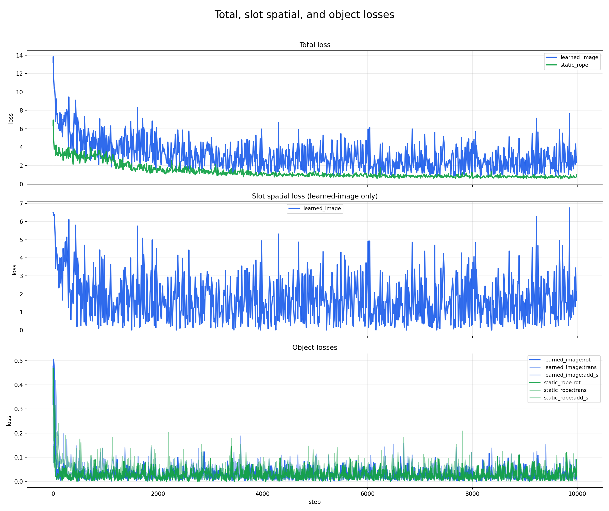
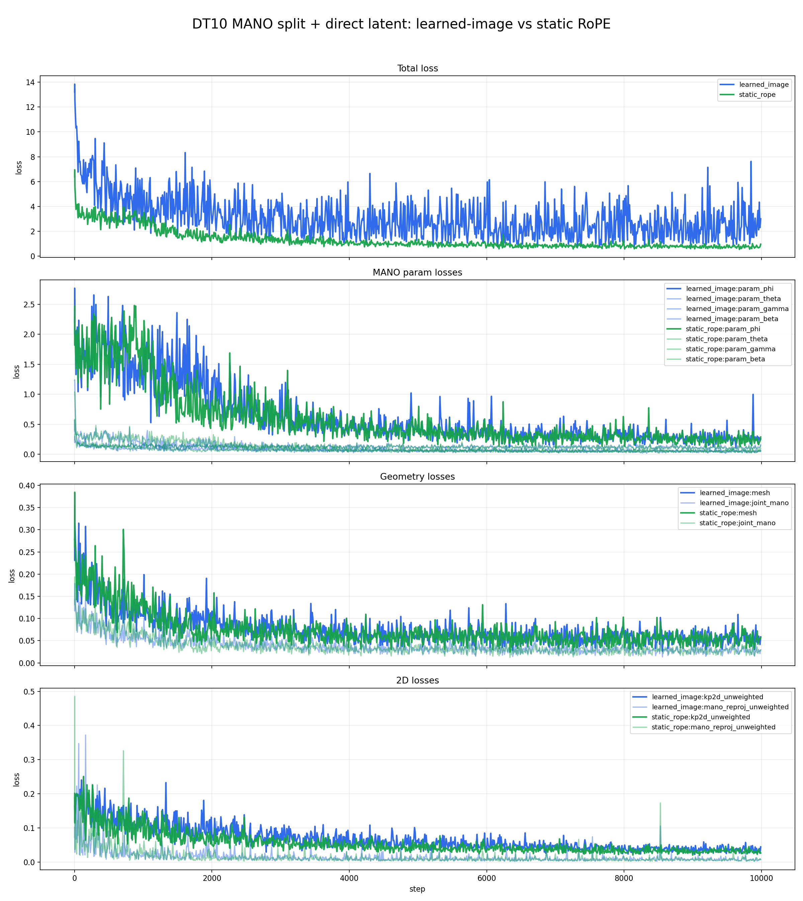
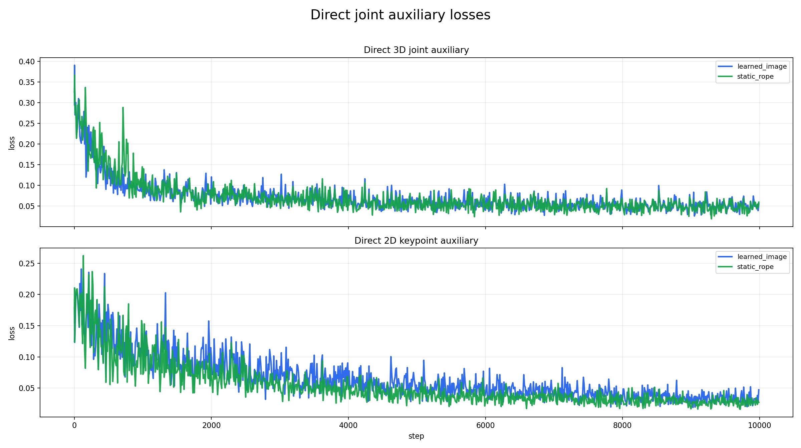
Each card shows the overlay on the input clip followed by the exported 3D joint plot.
20200709_141754_cam836212060125
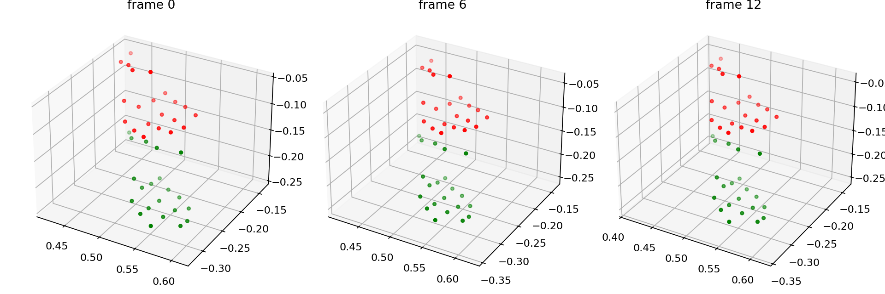
20200709_143747_cam932122060861
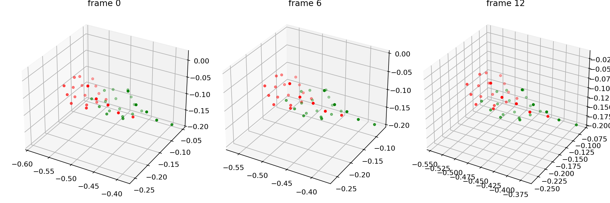
20200709_150243_cam839512060362
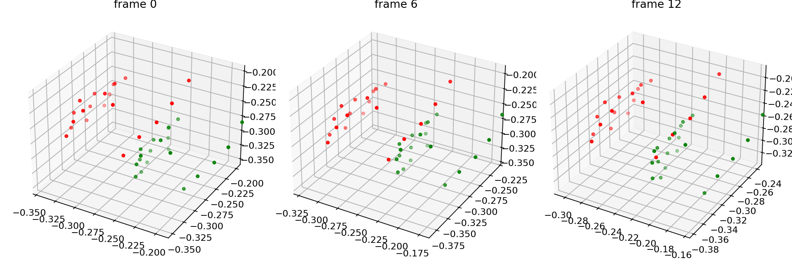
20200709_152240_cam932122061900
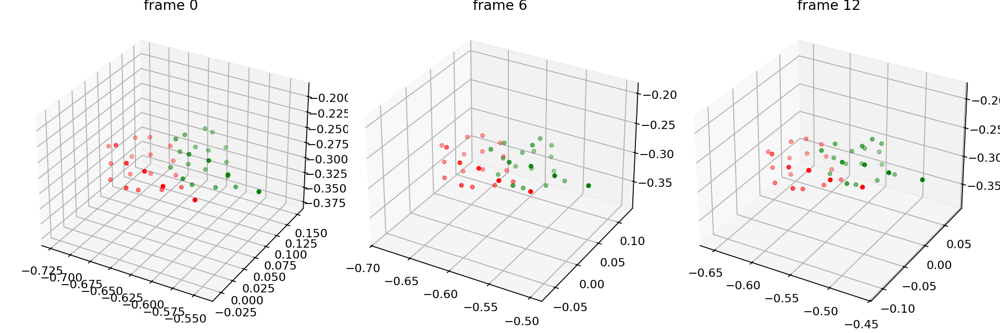
Each card shows the overlay on the input clip followed by the exported 3D joint plot.
20200928_143249_cam836212060125
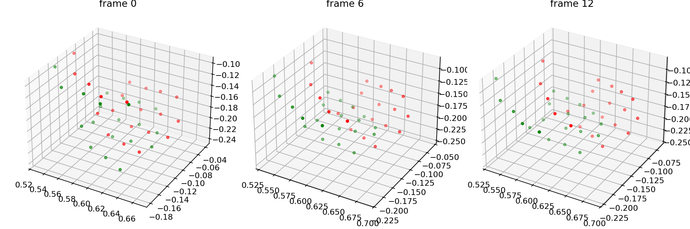
20200928_143606_cam932122062010
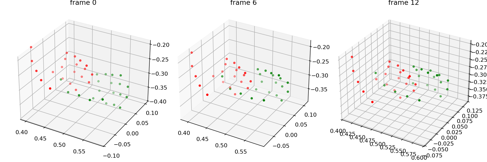
20200928_143915_cam932122061900
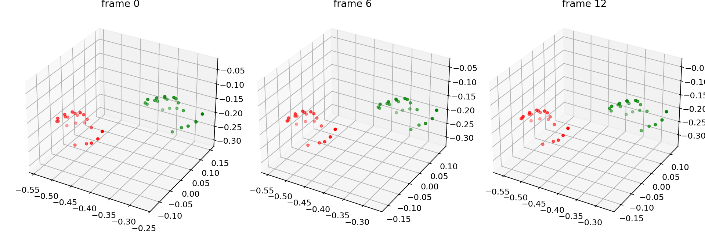
20200928_144226_cam932122060861
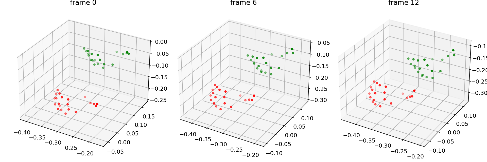
Paste this into a new Claude Code session:
Read https://haonanhe.github.io/HOI3R-project-tracking/updates/2026-05-09-session-summary-dt10-static-rope-mano-heads-eval.json and continue from tasks_pending[0] (P0-RERUN-CHECKPOINT-FIXED [P0]: Use d9e1d64 or later for any direct-aux or learned-spatial eval; older checkpoints cannot evaluate those heads because they were not saved.). Context: branch feat/dcf@1077137; worktree /mnt/afs/haonan/hoi3r/HOI3R/.worktrees/feat-dcf.